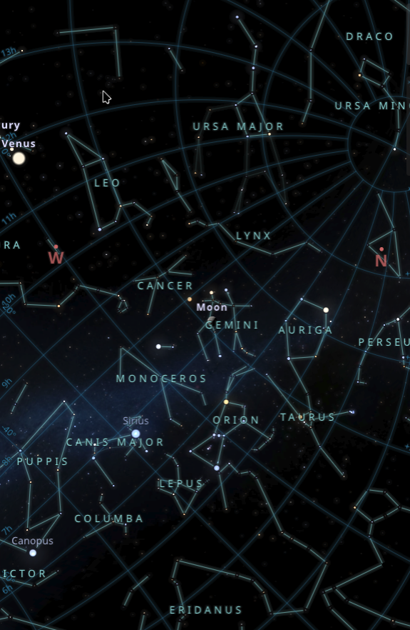

The Night You Arrived

[11th October, 2009] · [Khulna]
On the night you arrived, the sky arranged itself like this. Same stars as every other night, but a different shape. Because you were looking at them from a new angle now. Because the world had one more person in it who noticed things.
Not for a prophecy. Not for a war. Just for you, so someone could look up and say: there. That's where she started.
The universe had a lot going on that night. It still made room.
— M